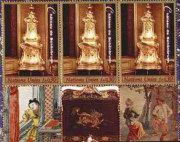

NOUTATI DIN ELVETIA, LIECHTENSTEIN SI NATIUNILE UNITE
In istorie Elvetia va avea ultimul cuvânt
Victor Hugo
Elvetia
10.3.98 si 9.8.98 Peisaje din Elvetia, de Jean-Frédéric Schnyder


9.3.1999. Benzi desenate de Rodolphe Toepffer (1799-1846). Emise in carnete de 2 x 6 marci. 24.9.99. Giovanni Segantini (1858-1899). Amiaza în Alpi, 1891.
|
|
 |

Liechtenstein
1.3.1999 - Vederi din sate, 3 valori. Dupa desenele lui Otto Zeiller, realizate de catre Marianne Siegl. 9.9.99 ora 9, Vederi din Liechtenstein, de Eugen Verling, 3 valori.
 |
 |
6.12.99. Craciun 1999. Tablou din capela Ste-Marie de la Consolation din Dux, Shaan.1.1.2000 "2000 ani de crestinism", picturi de de Mathias Stromer, în jur de 1642 si de Ferdinand Gehr, 1990.
|
|
 |

Natiunile Unite
27.10.1998. A 50-a aniversare a Declaratiei Universale a Drepturilor Omului. 6 valori, Picturi de Jean Michel Folon, un pictor belgian. Valorile de SFr 0,90 si SFr 1,80 au fost distinse cu Marele Premiu pentru arta filatelica la expozitia Riccione '99, Italia.
|
|


4.12.98. Palatul si gradinile Schoenbrunn. 6 marci, 3 PPZ, 3 carnete.
|
 |

| Revised:
12/04/08. |